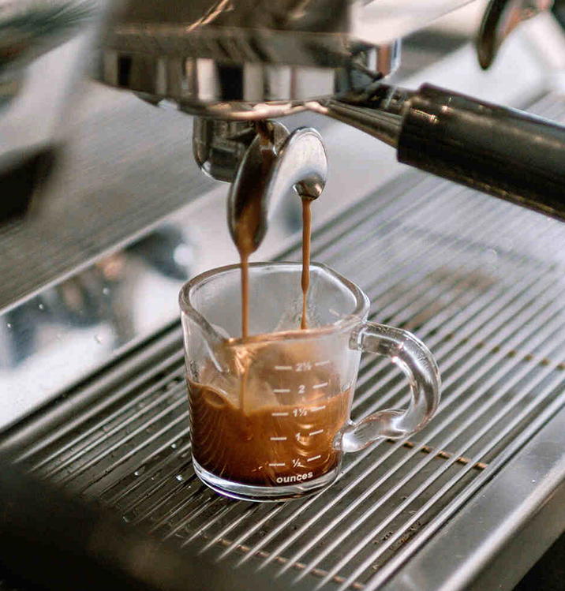
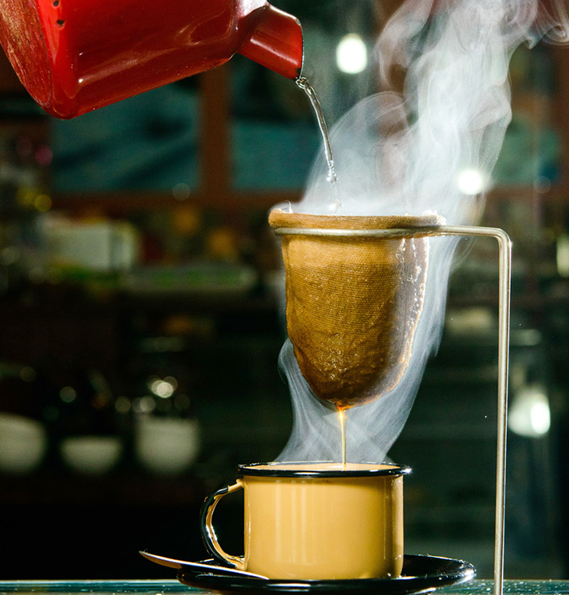

O sabor do café esta diretamente relacionado a qualidade dos grãos e processo de torra.
Esperimente para encontrar o que mais se adequa a seu gosto.
Expresso
Fazer um café espresso requer uma máquina de espresso específica, porém pode ser encontrado em diversos locais para venda.
Na produção de expresso feita por estabelecimentos comerciais os passos são:

1- Ao início do turno ligar a máquina pois ela deve estar bem aquecida antes de usar.
2- Os grãos são moídos imediatamente antes do preparo para conservar ao máximo seu sabor.
3- O café é colocado no porta-filtro (apetrecho metálico que se acopla a máquina), e pressionado para ficar com uma superfície uniforme e bem compactado.
4- O porta-filtro é então acoplado a máquina onde a água quente será forçada sob pressão por entre o café.
5- O espresso deve fluir em um fluxo constante e ter uma cor marrom dourada.
Cafeteira Italiana(Moka)
Para fazer café moka, você precisará de uma cafeteira italiana (também conhecida como Bialetti), água e café moído.
Para a produção são apenas alguns passos:
1- Encha a base da cafeteira com água até a válvula de segurança, evitando que a água passe por ela.
2- Coloque café moído na cesta do filtro, preenchendo-a sem pressionar o café.
3- Monte a cafeteira com a parte superior enroscada na base.
4- Coloque a cafeteira em um fogão em fogo baixo.
5- O café começará a subir pela haste e entrar na parte superior da cafeteira.
6- Quando você ouvir um som borbulhante o seu café moka estará pronto.
Prensa Francesa
A prensa francesa, é uma ótima maneira de preparar café e é especialmente boa para realçar os sabores dos grãos de café.
Para a produção são apenas alguns passos:
1- Adicione o café moído à prensa francesa.
2- Despeje água quente(cerca de 95°) sobre o café.
3- Mexa a mistura de café e água com uma colher de cabo longo para garantir que todos os grãos de café sejam envolvidos pela água.
4- Coloque a tampa da prensa francesa.
5- Deixe o café em infusão por cerca de 4 minutos.
6- Pressione lentamente o êmbolo para baixo com pressão constante. Isso separará os grãos de café do líquido, deixando o café pronto para servir.
Café Filtrado(Coado)
Fazer café filtrado é uma maneira clássica e popular de preparar café.
Para a produção são apenas alguns passos:

1- Aqueça a água, evite usar água fervente, pois pode prejudicar o sabor do café.
2- Coloque o suporte de filtro sobre o bule ou o recipiente em que o café será preparado.
3- Coloque o filtro de papel (ou pano conforme a preferência) no suporte de filtro.
4- Adicione a quantidade desejada de café moído ao filtro.
5- Despeje a água sobre o café aos poucos fazendo movimentos rotativos para melhor absorção do café.
6- Deixe a água passar completamente pelo café e pelo filtro.